I walked every surface of the running app in Expert and Guided on the Data Center Energy Hub template, before and after solving. This page shows what I found, a proposed structure for features and results, design rules, and mockups. Each finding is labelled M measured (a screenshot, a source grep or a contrast calculation) or O opinion.
Kpi component and one format.ts.ChartCard standard with reference lines and highlights.These go through the coordinator as interactive choices. Nothing in a section is built until you've picked its design.
Captured at 1440×900, dark theme (the shipped default), with no assistant key configured. Three states: unsolved, Guided hub study certified (0.6 h/yr against a 3 h/yr goal), and Expert LOPF optimal (4.78 s, €39.75 M).
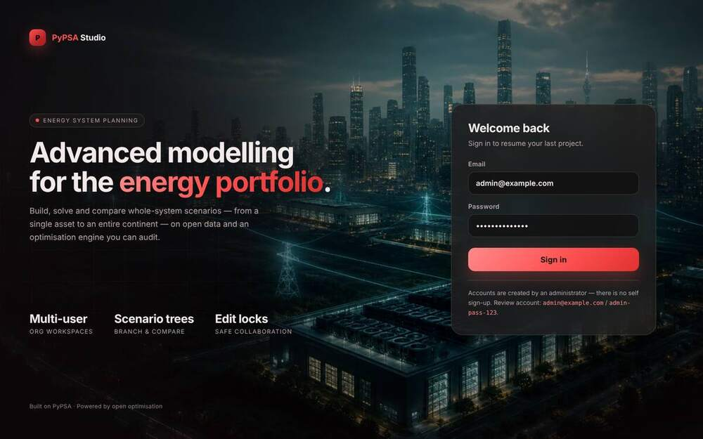
admin-pass-123 and prints it as a "Review account". It is wrong for this install. M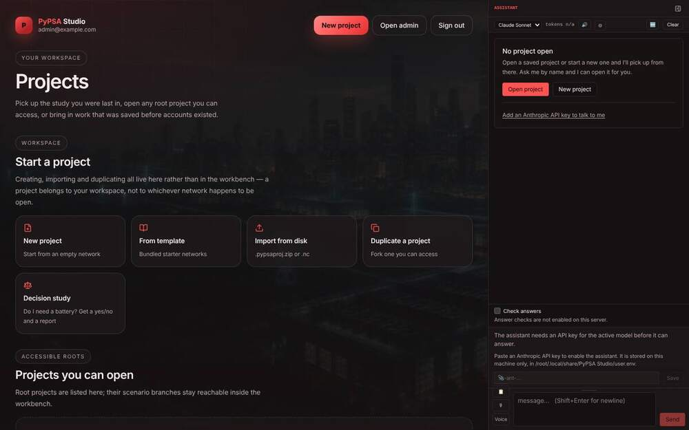
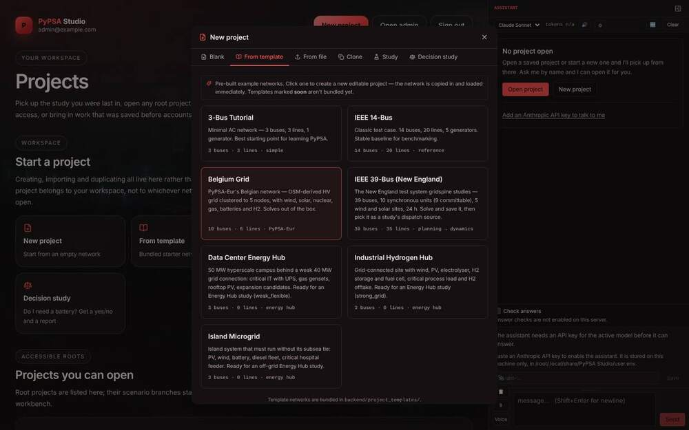
weak_flexible). One card says both "5 nodes" and "10 buses". M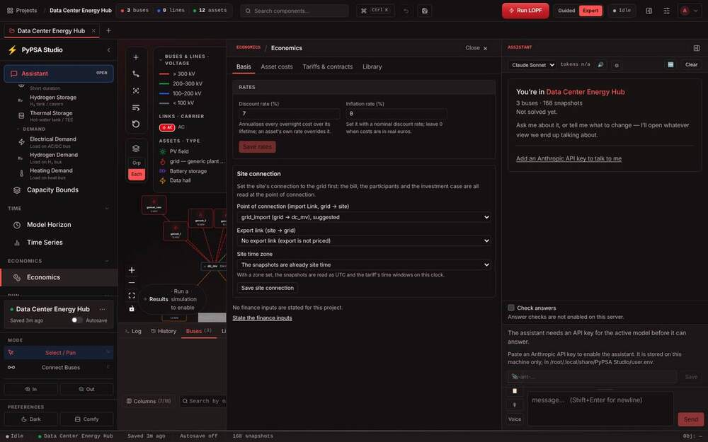
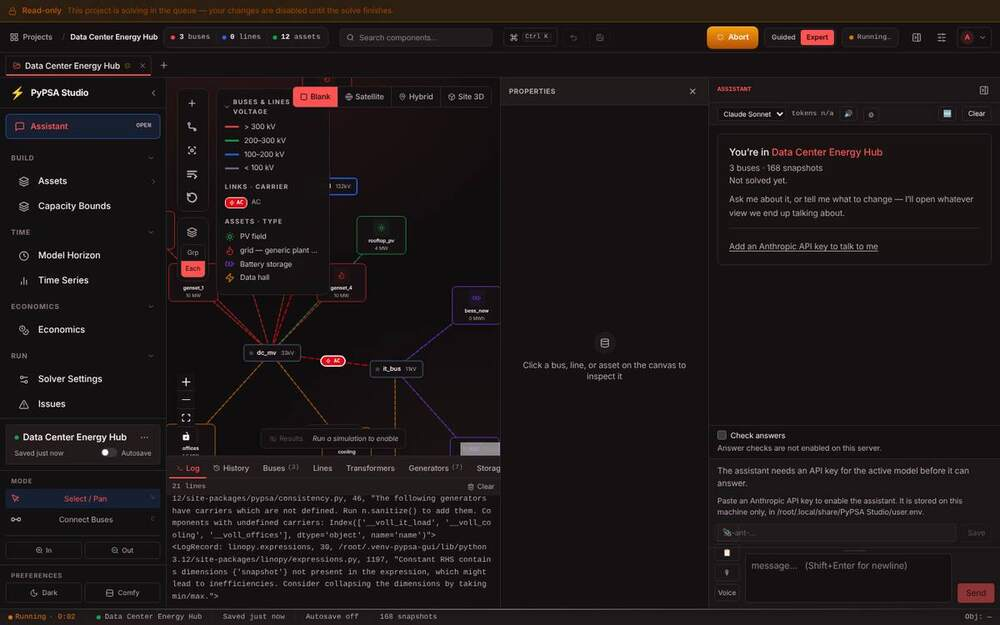
LogRecord reprs. M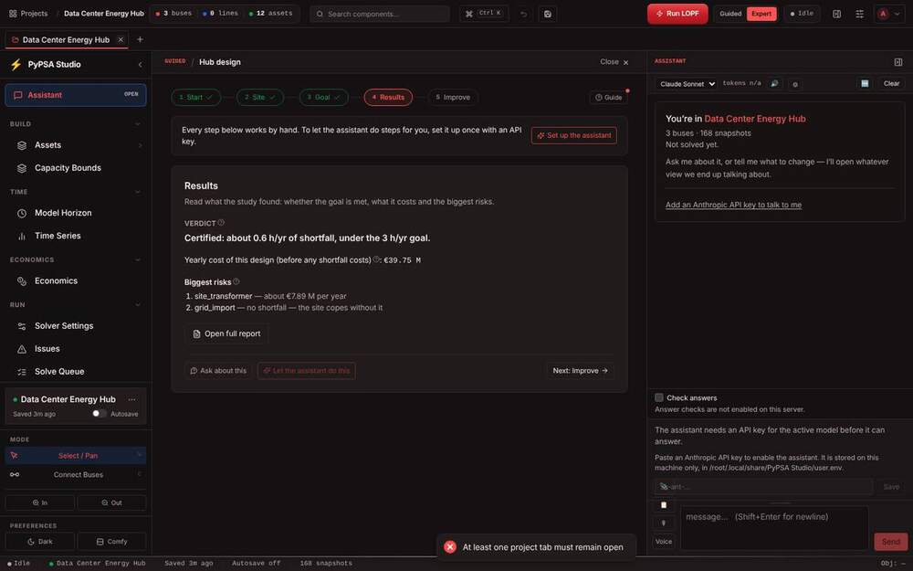
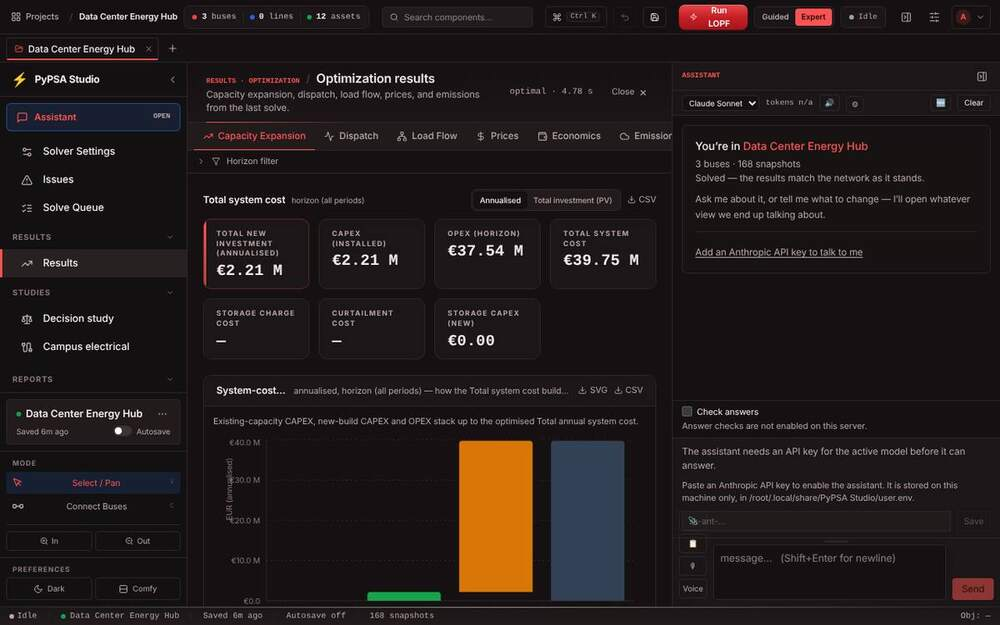
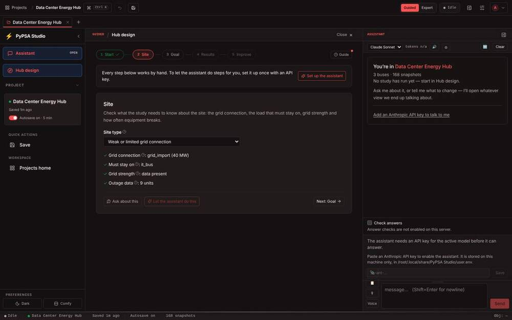
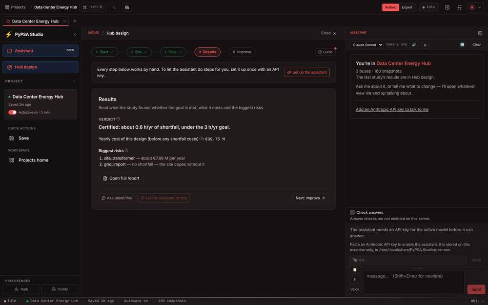
site_transformer), two money styles in one card, and "no shortfall" listed as a risk. M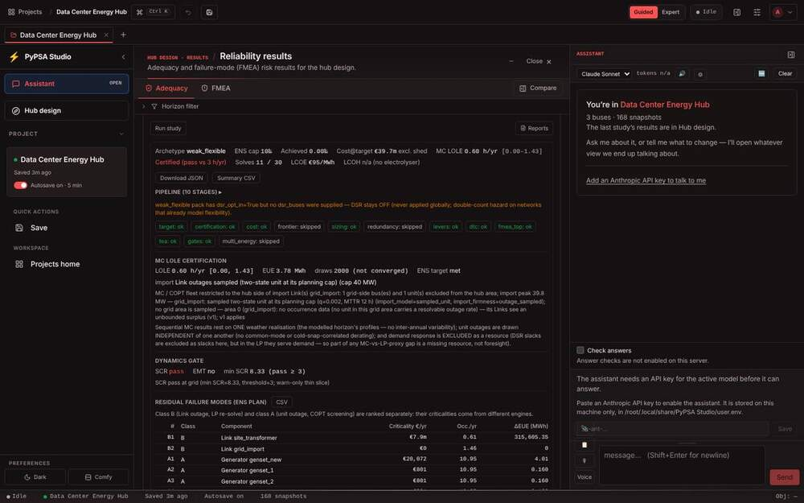
€39.7m. M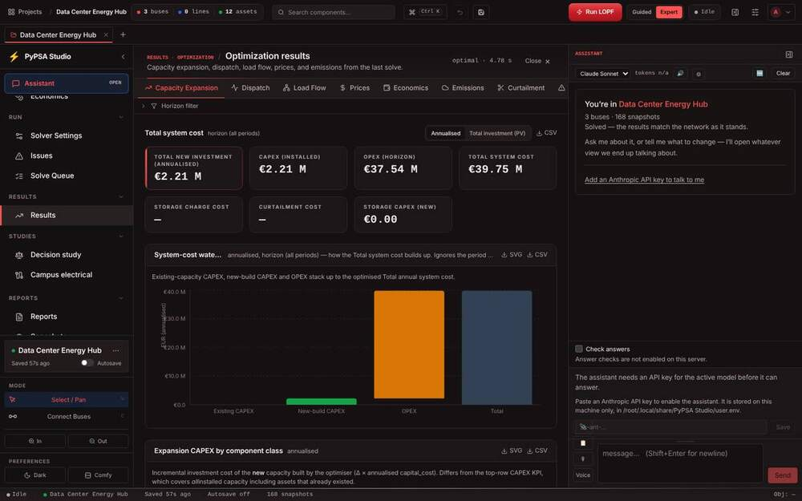
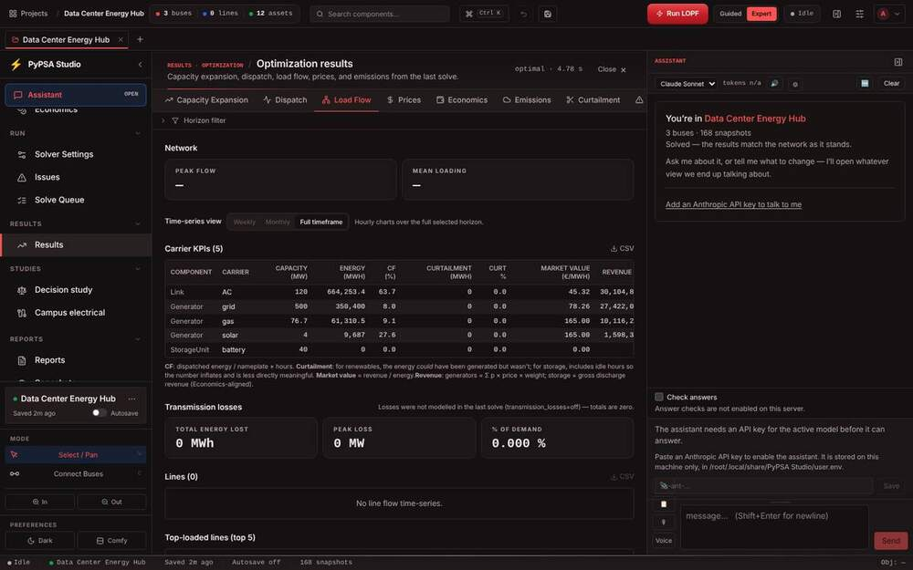
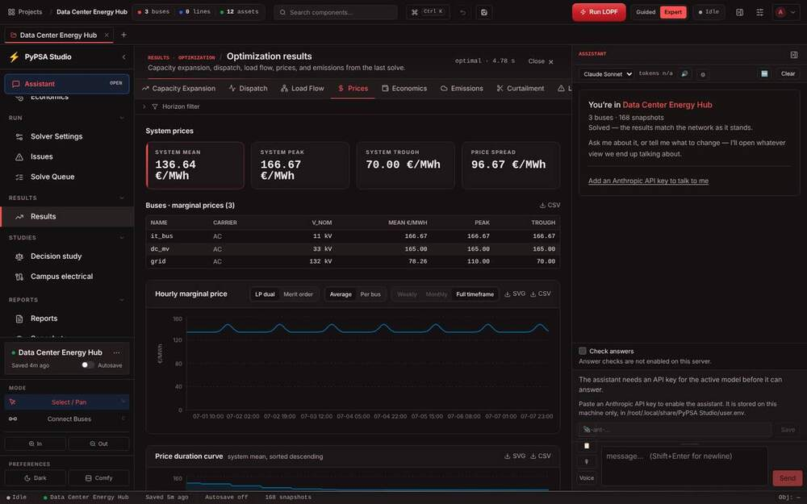
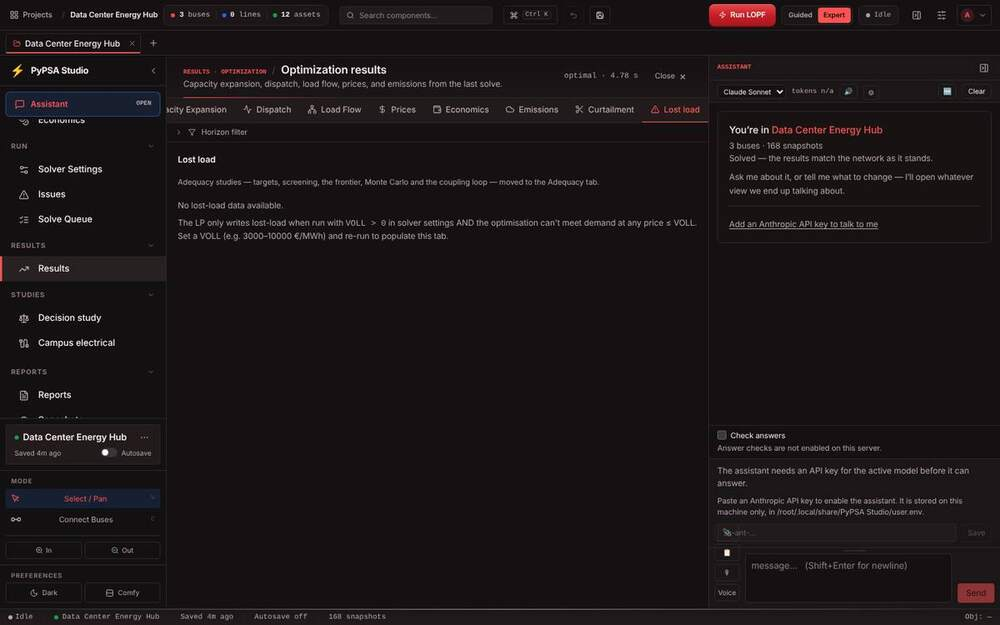
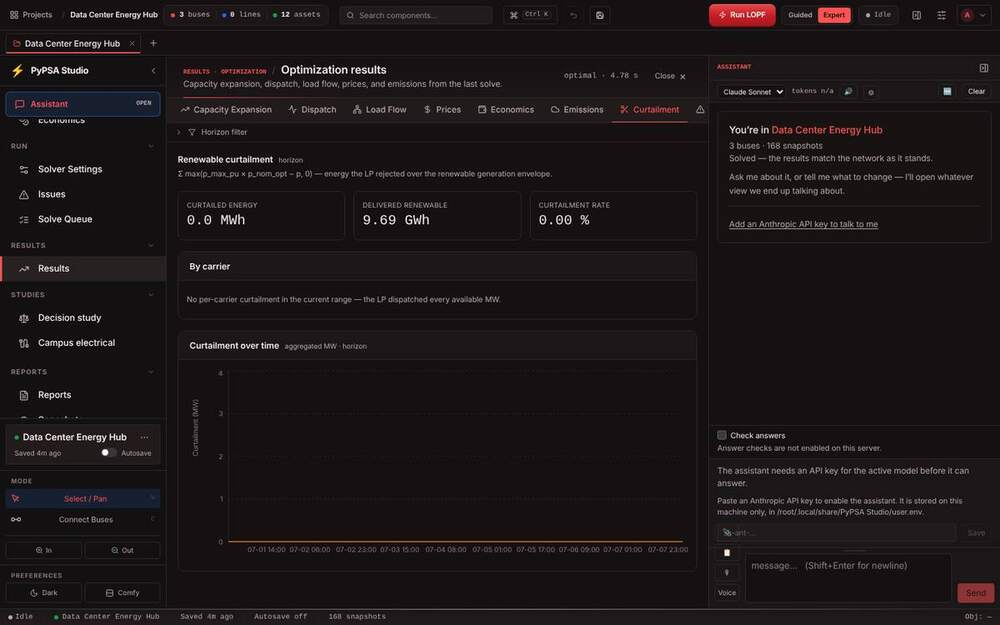
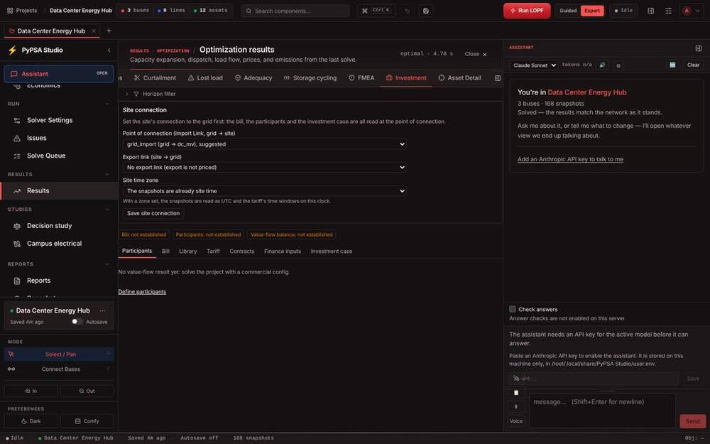
| # | Finding | Kind | M/O |
|---|---|---|---|
| L1 | The login HTML pre-fills and prints admin-pass-123 (index.html:395,402). | Hygiene | M |
| P1 | The projects list is below the fold, behind tenancy copy and jargon. | Crowded | M |
| P2 | Two creation menus with different names. | Inconsistent | M |
| P3 | A developer path and pack ids in template cards. "5 nodes" vs "10 buses". | Hard to read | M |
| P4 | Decision study is offered, then refused in multi-user mode. | Misleading | M |
| P5 | A template create 403 with no visible error (account had no workspace; may be environment-specific). | Bug, repro | M |
| W1 | The canvas gets about 220 px with a panel open. The dock is 420 px even when unconfigured. | Crowded | M |
| W2 | Sidebar chrome takes about 290 of 900 px. | Crowded | M |
| W3 | The project name appears 5×. Run state appears 3–4×. | Redundant | M |
| W4 | The Guided panel stays open in Expert. | Inconsistent | M |
| W5 | Autosave reads "on" in Guided and "off" in Expert. | Inconsistent, repro | M |
| W6 | A read-only banner naming the same user as the editor (seen once). | Bug, repro | M |
| W7 | Wrapping at 1280 px. | Crowded | M |
| W8 | Raw Python log reprs. | Hard to read | M |
| W9 | The API key is requested three times on one screen. | Crowded | M |
| G1 | Raw ids in Guided. | Hard to read | M |
| G2 | The Results step is locked before a run. | Not-run state | M |
| G3 | Two money styles, and a non-risk listed as a risk. | Inconsistent | M |
| G4 | The full report has Expert density. | Density | M |
| G5 | "Solved" means a study run in Guided and an LOPF in Expert. | Misgrouped state | M |
| G6 | No grid plan or operation in Guided Results. | Missing groups | M |
| E1 | Sidebar groups mix stage and category. Versioning sits under Reports. | Misgrouped | M |
| E2 | "Economics" names an input panel and a results tab. A form is duplicated. | Misgrouped | M |
| E3 | Campus electrical starts from a raw YAML textarea. | Hard to use | O |
| R1 | 14 tabs, 7 visible, no overflow cue, no summary on master. | Crowded | M |
| R2 | Results not grouped by question. | Misgrouped | M |
| R3 | Not modelled or not run shown as 0 or "—". | Not-run state | M |
| R4 | Seven KPI implementations. Labels in caps, values wrap. | Inconsistent | M |
| R5 | Mixed money, energy and emission precision. Three date formats. | Inconsistent | M |
| R6 | Axis titles overlap ticks, unitless ticks, cut-off titles, no reference lines. | Hard to read | M |
| R7 | Method prose comes before the numbers. | Hard to read | O |
| R8 | Asset Detail cuts off a value. | Clipped | M |
| A1–A3 | Contrast: axis text 4.0 : 1, white on accent 3.2 : 1, disabled text 2.1 : 1 (AA needs 4.5 : 1). | Accessibility | M |
| A4 | Ten arbitrary text sizes. 893 uses of 10 px. | Inconsistent | M |
Each category answers one question. The same four names appear in the Expert sidebar, in the Results groups, in the Guided steps and in the report chapters. Project-wide things (scenarios, snapshots, reports, the queue) stay outside them.
| Category | Question | Inputs and tools | Results (today's tabs) |
|---|---|---|---|
| Investment | What do we build, and what does it cost and earn? | Assets, capacity bounds, Economics (rates, costs, tariffs, finance), Decision study | Capacity Expansion, Economics, Prices, Investment |
| Grid plan | Can the network and the connection carry it? | Network, Campus electrical, Grid codes | Load Flow, grid-code compliance, short circuit |
| Reliability | Does the critical load stay on? | ENS target, reserve margin, outage data, stress scenarios | Adequacy, Lost load, FMEA |
| Operation | How does it run hour by hour? | Horizon, time series, dispatch and solver settings, island operation | Dispatch, Storage cycling, Curtailment, Emissions |
| Project | — | Scenarios, Snapshots, Reports, Solve queue, Issues | Compare (rail), Asset detail (drawer) |
The group layer is presentation only. ResultsTab ids stay the same, so the assistant's navigation and deep links keep working. If a group becomes a navigable target, the assistant inventory is regenerated with its tool, never by hand.
The mockup uses this run's real numbers and shows all four groups. Grid plan shows the states that today read as 0 or "—".
Group dots: green when everything in the group has run, amber when something has not run or was not modelled. "0 MWh" curtailment is a computed zero, so it shows a number. Losses, line loading and grid code show states instead. Reliability figures come from the Guided hub study on the same project, which also resolves G5.
| Part | Rule |
|---|---|
| Label | Sentence case, 12 px, muted, at most 2 lines. No all-caps. |
| Value | 22 px, tabular figures, 3 significant figures. The unit is 13 px and muted on the same line, and never wraps. |
| Basis | 11 px: what it covers ("annualised · whole horizon", "vs 3 h/yr goal"). |
| State | A pill for not run yet, not modelled, not applicable or out of date, plus the action that resolves it. |
| Headline | One per group, shown by size and fill. No coloured rail. |
| Grid | auto-fill, minmax(180px,1fr), equal heights, 12 px gap. KPIs come first in every tab, then charts, tables and method notes. |
07-01 10:00 dates, nothing highlighted.The title states the finding. The subtitle carries the unit, the resolution and the window. The unit is on the top tick, so there is no rotated axis title. The mean is a reference line, the peak is annotated, and the axis text is 4.5 : 1.
The step labels and explanations belong to the E2E guided session. This mockup shows only the shared parts: the verdict, KPI tiles, states and display names. Grid connection has not been checked yet, so it shows a state rather than "no shortfall".
The sidebar collapses to icons while a panel is open. The dock becomes a rail unless pinned (this change goes to the coordinator because it touches the companion stream's file). Status shows in one place.
| Quantity | KPI | Table |
|---|---|---|
| Money | €39.8 M · €2.21 M · €801 | One unit per column, in the header |
| Energy | 9.69 GWh · 3.78 MWh | Column unit chosen from the column's largest value |
| Power | 40.0 MW | Same rule |
| Emissions | 135 kt CO₂ | t CO₂ column |
| Price | 136.6 €/MWh | Same |
| Reliability | 0.6 h/yr | Same |
| Time | 2030-07-01 14:00 | ISO, 24 h, everywhere. Axis ticks Jul 01, with the year in the subtitle |
accent-700 (4.5 : 1). Axis and secondary text go up to at least 4.5 : 1. Carrier colours come only from colourForCarrier. Good, warning and bad are never shown in the accent colour.| Slice | What | Value | Risk | Coordinates with |
|---|---|---|---|---|
| S1 | format.ts and the Kpi standard. Migrate six results KPI variants. | High | Low | M3 adopts it after #245 |
| S2 | ResultState (six states) on Summary, Load Flow, Capacity Expansion, Curtailment and Lost load. | High | Low–med | Owner signs off the per-metric states |
| S3 | Results group layer, Asset detail drawer, input form moved out of Results. | High | Medium | After M3. Inventory regenerated |
| S4 | ChartCard, axes, reference lines, contrast tokens. | Med–high | Low–med | — |
| S5 | Three-column shell, dock rail, sidebar chrome, single status. | Med–high | Medium | Companion stream (AssistantDock) |
| S6 | Guided Results never locked, same cards, display names, Guided-density report. | High | Medium | E2E guided session |
| S7 | Projects first, one creation menu, template copy, login hint. | Medium | Low | — |
| S8 | Expert sidebar regrouped by category. | Medium | Med–high | Last |
Each slice is a small PR off master. Tests are written first, snapshot and layout tests are updated deliberately, and each PR carries a release-note fragment. No engine or number changes. Rounding rules come to you before they ship.